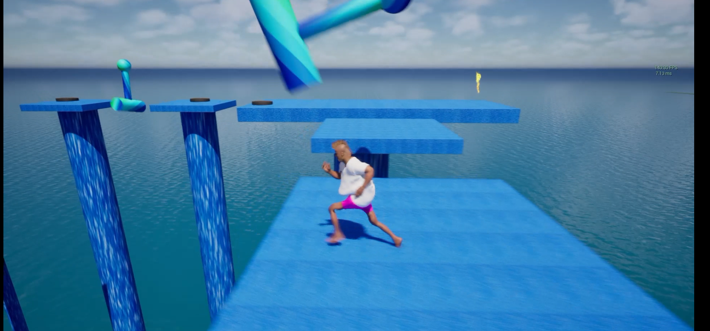

Trial of Terriable Tumbles
A wipeout styled game written entirely made with Blueprints. The player has to run, jump and dash between platforms & obsticles to reach a giant Trophy.
My role: everything — gameplay, character models, textures, Music, HUD and Menus.